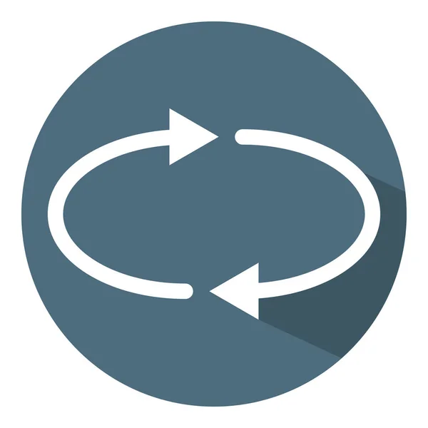

Fase 5 - Iteração
Iteração é um processo no qual você soma valores repetidamente em um loop. Isso é comumente usado para calcular a soma de uma série de números ou para acumular valores ao longo de uma iteração em uma estrutura de dados, como uma lista
Nessa Fase seu objetivo é escolher um melhor valor para a iteração do deslocamento do seu personagem.